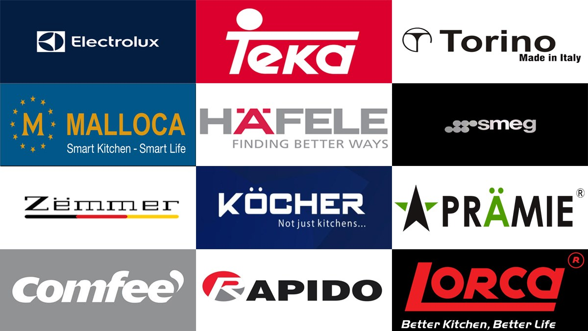
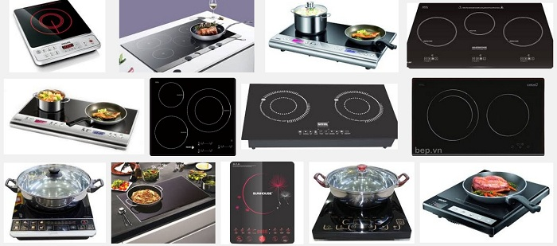

Địa Chỉ Sửa Bếp Từ, Bếp Điện Tại Hà Nội – Thợ Giỏi, Linh Kiện Chính Hãng
Bếp từ và bếp điện là "trái tim" của căn bếp hiện đại. Tuy nhiên, do hoạt động với công suất lớn và thường xuyên tiếp xúc với nhiệt độ cao, các linh kiện điện tử bên trong rất dễ gặp sự cố như: lỗi cảm ứng, không nhận nồi, hoặc nổ cầu chì do quá tải (cháy IGBT).
Quý khách đang cần sửa bếp từ tại nhà Hà Nội uy tín? Điện Lạnh Bách Khoa chuyên xử lý các dòng bếp từ đơn, bếp từ đôi, bếp hồng ngoại nhập khẩu Châu Âu, Nhật Bản với cam kết sửa đúng bệnh, thay đúng linh kiện chuẩn hãng.
📞 0559763681 - BẤM GỌI NGAY Hoặc Hotline: 03672741521. Những lỗi thường gặp trên bếp từ và bếp điện

Bếp từ có cấu tạo mạch điện cực kỳ phức tạp. Dưới đây là các sự cố phổ biến nhất:
Bếp từ không nhận nồi hoặc nhận nồi chập chờn
Nguyên nhân thường do hỏng mạch nhận nồi, tụ điện bị khô hoặc cuộn dây cảm ứng bị lệch.
Bếp từ mất nguồn, nổ cầu chì hoặc nhảy Aptomat
Thường do chập công suất (IGBT). Đây là hư hỏng nặng nhất, nếu không thay đúng linh kiện chất lượng, máy sẽ rất nhanh bị hỏng lại.
Bếp hồng ngoại không nóng hoặc nóng yếu
Thường do đứt mâm nhiệt hoặc hỏng rơ le đóng ngắt trên bo mạch. Bếp vẫn sáng đèn nhưng không tỏa nhiệt.
Liệt phím cảm ứng hoặc báo lỗi nhấp nháy
Bảng điều khiển bị ẩm hoặc hỏng IC cảm ứng khiến người dùng không thể thao tác.
2. Giải mã mã lỗi phổ biến
- E0: Không nhận diện được nồi -> Kiểm tra loại nồi (hút nam châm).
- E1, E2: Hệ thống quá nhiệt / Cảm biến lỗi -> Tắt bếp để nguội, kiểm tra quạt.
- E9: Lỗi bo mạch / Lỗi giao tiếp -> Cần thợ chuyên môn kiểm tra mạch điều khiển.
- H (Hot): Cảnh báo mặt bếp đang nóng -> Đây là cảnh báo an toàn, không phải lỗi.
3. Tại sao không nên tự sửa bếp từ?
Bếp từ sử dụng dòng điện cao áp. Việc tự ý tháo máy có thể dẫn đến:
- Cháy nổ bo mạch: Nếu đấu nối sai hoặc dùng linh kiện kém chất lượng.
- Nguy hiểm về điện: Rò rỉ điện ra mặt kính cực kỳ nguy hiểm cho người nấu.
- Làm hỏng linh kiện zin: Thợ không chuyên có thể làm hỏng các IC điều khiển vốn rất khó tìm linh kiện thay thế.
4. Điện Lạnh Bách Khoa chuyên sửa các hãng bếp nào?
Chúng tôi cung cấp linh kiện và dịch vụ sửa chữa chuyên sâu cho:
- Bếp Châu Âu: Bosch, Teka, Fagor, Hafele, Electrolux, Malloca.
- Bếp Nhật Nội Địa: Panasonic, Mitsubishi, Hitachi (Điện 110V/200V).
- Dòng máy phổ thông: Sunhouse, Kangaroo, Midea, Bluestone, Sanaky.

Chúng tôi nhận sửa tất cả các thương hiệu bếp từ từ phổ thông đến cao cấp5. Quy trình sửa chữa chuyên nghiệp
- Bước 1: Tiếp nhận thông tin mã lỗi từ khách hàng qua Hotline.
- Bước 2: Kỹ thuật viên kiểm tra linh kiện (IGBT, tụ điện, cảm biến) bằng thiết bị đo chuyên dụng.
- Bước 3: Báo giá chi tiết linh kiện cần thay thế trước khi làm.
- Bước 4: Tiến hành sửa chữa và vệ sinh hệ thống quạt tản nhiệt của bếp.
- Bước 5: Test máy với nồi thực tế, bàn giao phiếu bảo hành từ 6-12 tháng.

Kiểm tra bo mạch công suất và thay thế linh kiện chính hãng tại nhà6. Mẹo sử dụng bếp từ bền bỉ
- Không ngắt điện ngay: Hãy đợi quạt tản nhiệt ngừng hẳn rồi mới rút phích cắm.
- Dùng nồi đáy phẳng: Giúp truyền nhiệt tốt và giảm tải cho mạch công suất.
- Tránh để nước tràn: Nước thấm xuống mặt kính có thể gây chập cháy bo mạch điều khiển.
- Khe tản nhiệt thông thoáng: Đảm bảo không gian dưới bếp luôn thoáng để linh kiện không bị quá nhiệt.
ĐẶT LỊCH SỬA BẾP TỪ NGAY
Chuyên nghiệp - Tận tâm - Phục vụ 24/7 tại Hà Nội
HOTLINE: 0559763681